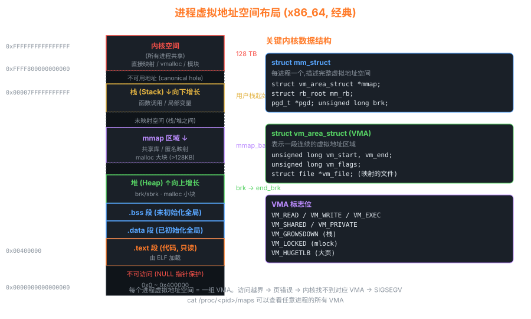

03进程管理 — task_struct、fork、上下文切换
进程管理是内核的核心中的核心。掌握本章后，你就能回答："从我敲下 ./hello 回车到 printf 输出，内核里到底发生了什么？"
3.1 虚拟地址空间布局

每个进程独立拥有的 128TB 虚拟地址空间（x86_64）
3.2 task_struct — 一切的源头
Linux 把所有"可运行单元"（不管是进程还是线程）都用 task_struct 表示。这是内核里最大的结构体，包含 ~400 个字段。
/* include/linux/sched.h — 简化版核心字段 */ struct task_struct { /* === 调度相关 === */ unsigned int __state; // TASK_RUNNING / TASK_INTERRUPTIBLE / ... void *stack; // 内核栈指针 int prio, static_prio, normal_prio; struct sched_entity se; // CFS 调度实体 (含 vruntime) const struct sched_class *sched_class; /* === 进程身份 === */ pid_t pid; // 进程 ID (在 PID 命名空间内) pid_t tgid; // 线程组 ID = 主线程 pid struct task_struct __rcu *parent; struct list_head children; struct list_head sibling; /* === 内存 === */ struct mm_struct *mm; // 用户进程的地址空间（线程共享） struct mm_struct *active_mm; // 内核线程"借用"的 mm /* === 文件 === */ struct files_struct *files; // 打开的文件表 struct fs_struct *fs; // 当前目录、根目录 /* === 信号 === */ struct signal_struct *signal; struct sighand_struct *sighand; sigset_t blocked, real_blocked; /* === 命名空间 (容器关键) === */ struct nsproxy *nsproxy; // 8 个 namespace 指针 /* === cgroup === */ struct css_set __rcu *cgroups; /* === 凭证 === */ const struct cred __rcu *real_cred; const struct cred __rcu *cred; /* === 其他: perf, ftrace, audit, seccomp ... */ char comm[TASK_COMM_LEN]; // 进程名（最大 16 字节） };
深入：线程是怎么实现的？
Linux 的线程就是共享 mm 的进程。pthread_create 底层调用 clone(CLONE_VM | CLONE_FS | CLONE_FILES | CLONE_SIGHAND | CLONE_THREAD | ...)，
两个 task_struct 共享同一个 mm_struct，所以共用堆和全局变量。
这就是 Linux "1:1 线程模型"。tgid 字段记录主线程 pid，getpid() 实际返回 tgid，gettid() 才返回真实 pid。
3.3 进程状态机
完整的进程状态转换。"D"状态进程无法 kill，常见于网络/磁盘卡死
3.4 fork() 源码剖析 — 现代版本
fork 的本质是复制一个 task_struct，然后通过 Copy-on-Write 共享物理页直到一方写入。
/* kernel/fork.c (简化版本) */ SYSCALL_DEFINE0(fork) { struct kernel_clone_args args = { .exit_signal = SIGCHLD, }; return kernel_clone(&args); } pid_t kernel_clone(struct kernel_clone_args *args) { struct task_struct *p; pid_t pid; // 关键：copy_process 复制一份 task_struct p = copy_process(NULL, trace, NUMA_NO_NODE, args); if (IS_ERR(p)) return PTR_ERR(p); pid = pid_vnr(p->thread_pid); // 唤醒新进程 → 进入运行队列 wake_up_new_task(p); // CLONE_VFORK 时父进程阻塞等待 if (args->flags & CLONE_VFORK) wait_for_vfork_done(p, &vfork); return pid; // 父进程返回子 pid } struct task_struct *copy_process(...) { struct task_struct *p = dup_task_struct(current, node); // 1. 复制结构体 copy_creds(p, clone_flags); // 2. 复制凭证 copy_files(clone_flags, p); // 3. 复制文件描述符表 copy_fs(clone_flags, p); // 4. 复制根目录信息 copy_sighand(clone_flags, p); // 5. 复制信号处理 copy_mm(clone_flags, p); // 6. 关键!复制 mm_struct (CoW 在此触发) copy_namespaces(clone_flags, p); copy_thread(p, args); // 7. 设置子进程的"返回点" sched_cgroup_fork(p, args); return p; }
copy_mm — CoW 的核心
static int copy_mm(unsigned long clone_flags, struct task_struct *tsk) { if (clone_flags & CLONE_VM) { // 线程：共享 mm mmget(oldmm); mm = oldmm; } else { // 进程：复制 mm mm = dup_mm(tsk, current->mm); // → dup_mmap → 复制 VMA 链表 } // 注意：物理页表项设为只读，CoW 触发缺页 tsk->mm = mm; tsk->active_mm = mm; return 0; } /* CoW 触发：写只读页 → 缺页异常 → do_wp_page() */ static vm_fault_t do_wp_page(struct vm_fault *vmf) { struct page *page = vm_normal_page(...); if (page_count(page) == 1) { // 独占？直接改为可写 set_pte(vmf->pte, pte_mkwrite(pte)); } else { // 共享？分配新页拷贝 new_page = alloc_page(...); copy_user_highpage(new_page, page, address); set_pte(vmf->pte, mk_pte(new_page, PROT_WRITE)); } }
3.5 对照：Linux 0.11 的 fork（极简版）
/* linux-0.11/kernel/fork.c */ int copy_process(int nr, long ebp, ... /* 所有寄存器 */) { struct task_struct *p; p = (struct task_struct *) get_free_page(); // 分配一页存 task_struct if (!p) return -EAGAIN; task[nr] = p; *p = *current; // 结构体拷贝! p->state = TASK_UNINTERRUPTIBLE; p->pid = last_pid; p->father = current->pid; p->counter = p->priority; p->utime = p->stime = 0; // 关键：设置 TSS (硬件任务切换) p->tss.esp = esp; p->tss.eip = eip; // 子进程从这里继续 → 返回 0 p->tss.eflags = eflags; p->tss.eax = 0; // 子进程 fork() 返回 0 的实现! copy_mem(nr, p); // 复制段（0.11 是段页式） p->state = TASK_RUNNING; return last_pid; // 父进程返回子 pid }
"fork 返回两次" 的真相
fork 只调用了一次，但返回了两次。父进程返回路径正常出栈；子进程被构造时，
tss.eip 被设成 fork 系统调用即将返回的地址，tss.eax = 0（x86 上系统调用返回值放 eax）。
当调度器选中子进程，CPU 恢复其 TSS，rip 跳到 fork "出口"，eax=0，于是用户态看到 fork() == 0。
3.6 上下文切换 — switch_to
/* kernel/sched/core.c */ static __always_inline struct rq * context_switch(struct rq *rq, struct task_struct *prev, struct task_struct *next, struct rq_flags *rf) { // 1. 切换地址空间 (CR3) if (next->mm) switch_mm_irqs_off(prev->active_mm, next->mm, next); else { // 内核线程"借用"prev 的 mm，避免切 CR3 next->active_mm = prev->active_mm; mmgrab(prev->active_mm); } // 2. 切换寄存器（含栈指针）→ 真正的"换上下文" switch_to(prev, next, prev); // !!! 这之后 prev 的本函数不会立刻返回， // 要等 next 再被切回来才继续 !!! barrier(); return finish_task_switch(prev); } /* arch/x86/include/asm/switch_to.h */ #define switch_to(prev, next, last) \ do { \ ((last) = __switch_to_asm((prev), (next))); \ } while (0)
; arch/x86/entry/entry_64.S — __switch_to_asm SYM_FUNC_START(__switch_to_asm) pushq %rbp ; 保存当前进程的 callee-saved 寄存器 pushq %rbx pushq %r12 pushq %r13 pushq %r14 pushq %r15 movq %rsp, TASK_threadsp(%rdi) ; prev->thread.sp = rsp ← 关键! movq TASK_threadsp(%rsi), %rsp ; rsp = next->thread.sp ← 栈切了! popq %r15 ; 恢复 next 的寄存器 popq %r14 popq %r13 popq %r12 popq %rbx popq %rbp jmp __switch_to ; C 函数完成 FPU、TLS 等切换 SYM_FUNC_END(__switch_to_asm)
理解上下文切换的关键
"切换"二字的本质就两件事：
- 切栈：
rsp从 prev 的内核栈指向 next 的内核栈 - 切地址空间：CR3 寄存器指向 next 的 pgd（如果 next 是用户进程）
切完之后 ret 弹出的是 next 上次被切走时的返回地址，于是 next 从它当时"被打断"的地方继续。
3.7 调度器演化
| 版本 | 调度器 | 核心数据结构 | 选下一个进程的复杂度 |
|---|---|---|---|
| 0.11 | 简单时间片 | 固定 64 项 task[] 数组 | O(n) 遍历 |
| 2.4 | O(n) | 双向链表 runqueue | O(n) |
| 2.6.0~2.6.22 | O(1) | 140 个优先级链表 × 2 (active/expired) | O(1) |
| 2.6.23+ | CFS | 红黑树按 vruntime 排序 | O(log n) |
| 4.x+ | CFS + 调度类 | + RT、Deadline、Idle 调度类 | O(log n) |
CFS 是当前默认调度器，是第 10 章的主题。
3.8 动手实验
# 实验 1：观察 task_struct 切换 # /sys/kernel/debug/tracing/ 下打开调度事件 echo 1 > /sys/kernel/debug/tracing/events/sched/sched_switch/enable echo 1 > /sys/kernel/debug/tracing/tracing_on cat /sys/kernel/debug/tracing/trace_pipe # 实验 2：GDB 单步走完 fork (gdb) hbreak kernel_clone (gdb) c (gdb) n # 一步步过 copy_process # 实验 3：观察 CoW echo 1 > /proc/sys/vm/swappiness # 写一个 fork() 后立刻 sleep 的程序，对比 /proc/self/status 的 RssAnon